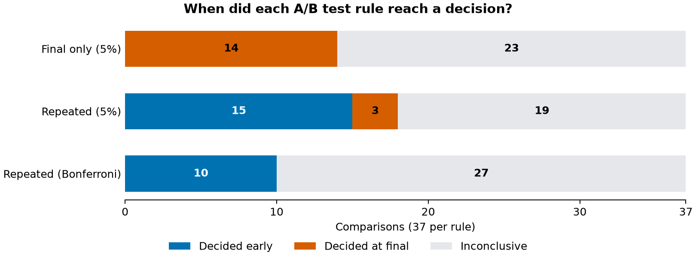

ASOS Decision Timing
How did checking an A/B test while it was running change when a decision was reached and which comparisons stayed inconclusive?
Earlier decisions and inconclusive results

Repeated 5% testing reached 15 early decisions, a median of 25 days before the final checkpoint among those decisions. Four of the 15 were inconclusive at the final readout.
Bonferroni-adjusted testing reached 10 early decisions, a median of 24.25 days before the final checkpoint among those decisions. It stayed inconclusive in four comparisons where the final-only rule reached a decision.
Across all 37 comparisons, 23 were inconclusive under final-only testing, 19 under repeated 5% testing and 27 under Bonferroni.
Method and limitations
I selected single-treatment experiments with a usable final checkpoint and at least one usable interim checkpoint on day 7, 14 or 21. Each look used a two-sided pooled test of proportions. The final-only rule tested once at 5%. The two monitoring rules stopped at the first significant result, using either 5% or a Bonferroni-adjusted 1.25% per look for four reserved looks.
Repeated testing at 5% gives each comparison several chances to cross the threshold. Bonferroni bounds the chance of a false positive across the scheduled looks when the individual tests are valid. The replay measures timing and agreement with the final reference. The accuracy of each rule remains unknown.
Proposed experiment · Driver onboarding
In a hypothetical driver-onboarding test, measure the share of assigned applicants who complete their first trip within seven days. Set the schedule and thresholds before enrolment. At each look, count only applicants whose full seven-day follow-up window has closed, including those who never finish onboarding or take a trip. Wait until the last enrolled applicant has had seven full days before the final readout.
One-page Power BI report
The report summarises the three rules and their decision counts.